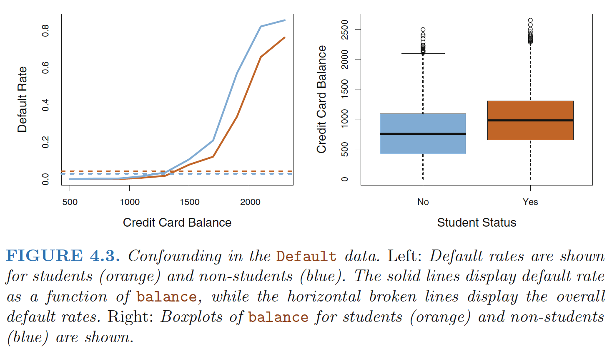

Some notation: \[ \begin{align} \theta^Tx=\sum_{i=1}^n \theta_ix_i \tag{weighted sum} \\ \sigma(z)=\frac{1}{1+e^{-z}} \tag{sigmoid function} \end{align} \]
Logistic Regression Overview
Logistic Regression is a classification algorithm that works by trying to learn a function that approximates \(P(Y|X)\). It makes the central assumption that $ P(Y|X) $ can be approximated as a sigmoid function applied to a linear combination of input features(important!).
Mathematically, for a single training datapoint \((x, y)\) Logistic Regression assumes: \[ P(Y = 1|\mathbf{X = x}) = σ(z) \text{, where } z = θ_0 +\sum_{i=1}^mθ_ix_i \] This assumption is often written in the equivalent forms: \[ P(Y = 1|\mathbf{X = x}) = σ(\theta^T\mathbf{x}) \tag{where we alwyas set $x_0$ to be 1}\\ P(Y = 0|\mathbf{X = x}) = 1-σ(\theta^T\mathbf{x}) \] Using these equations for probability of \(Y|X\) we can create an algorithm that select values of \(\theta\) that maximize that probability for all data.
Logistic Regression Assumption
- Binary logistic regression requires the dependent variable to be binary
- Observations to be independent of each other. In other words, the observations should not come from repeated measurements or matched data.
- Little or no multicollinearity among the independent variables. This means that the independent variables should not be too highly correlated with each other.
- Linearity of independent variables and log odds.
- Typically requires a large sample size.
Log Likelihood
To start, here is a super slick way of writing the probability of one datapoint: \[ P(Y=y|X=\mathbf{x})=\sigma(\theta^T\mathbf{x})^y \cdot[1-\sigma(\theta^T\mathbf{x})]^{1-y} \] Since each datapoint is independent, the probability of all the data (likelihood) is: \[ \begin{align} l(\theta)&=\prod_{i=1}^n P(Y=y^{(i)}| X=\mathbf{x}^{(i)}) \\ &=\prod_{i=1}^n \sigma(\theta^T\mathbf{x}^{(i)})^{y^{(i)}} \cdot[1-\sigma(\theta^T\mathbf{x})^{(i)}]^{1-y^{(i)}} \end{align} \] Take the log, then you get the Log Likelihood for Logistic Regression. \[ ll(\theta)=\sum_{i=1}^n y^{(i)}\log{\sigma(\theta^T\mathbf{x}^{(i)})}+(1-y^{(i)})\log{[1-\sigma(\theta^T\mathbf{x}^{(i)})]} \] Odds \[ \frac{\sigma(z)}{1-\sigma(z)}=\frac{y}{1-y}=e^{\theta^T\mathbf{x}} \] Take on any value between 0 and \(∞\).
Log-odds (Logit) \[ \begin{align} \log{\frac{\sigma(z)}{1-\sigma(z)}}=\log{\frac{y}{1-y}} =\theta ^T\mathbf{x} \end{align} \]
- logit is linear in \(\mathbf{x}\).
There is not a straight-line relationship between \(\sigma(\theta^T \mathbf{x})\) and \(\mathbf{x}\),
The rate of change in \(\sigma(\theta^T \mathbf{x})\) per unit change in \(X\) depends on the current value of $ $.
Gradient of Log Likelihood
Now that we have a function for log-likelihood, we simply need to chose the values of \(\theta\) that maximize it.
To start, here is the definition for the derivative of sigma with respect to its inputs: \[ \frac{\partial}{\partial z}\sigma(z)=\sigma(z)[1-\sigma(z)] \]
Here is the partial derivative of log-likelihood with respect to each parameter \(θ_j\): \[ \begin{align} \frac{\partial ll(\theta)}{\partial\theta_j}&=\frac{\partial}{\partial \theta_j}y\log{\sigma(\theta^T\mathbf{x})} +\frac{\partial}{\partial \theta_j}(1-y)\log{[1-\sigma(\theta^T\mathbf{x})]} \\ &=[\frac{y}{\sigma(\theta^Tx)}-\frac{1-y}{1-\sigma(\theta^Tx)}] \frac{\partial}{\partial \theta_j}\sigma(\theta^Tx) \\ &=[\frac{y}{\sigma(\theta^Tx)}-\frac{1-y}{1-\sigma(\theta^Tx)} ]\sigma(\theta^Tx)[1-\sigma(\theta^Tx)]x_j \\ &=\frac{y-\sigma(\theta^Tx)}{\sigma(\theta^Tx)[1-\sigma(\theta^Tx)]}\sigma(\theta^Tx)[1-\sigma(\theta^Tx)]x_j \\ &=[y-\sigma(\theta^Tx)]x_j \\ &=\sum_{i=1}^n[y^{(i)}-\sigma(\theta^T\mathbf{x}^{(i)})]x_j^{(i)} \end{align} \] Because the derivative of sums is the sum of derivatives, the gradient of theta is simply the sum of this term for each training datapoint.
Gradient Ascent Optimization
In the case of logistic regression we can’t solve for \(θ\) mathematically. Instead we use a computer to chose \(θ\). To do so we employ an algorithm called gradient ascent.
Gradient ascent claims that if you continuously take small steps in the direction of your gradient, you will eventually make it to a local maxima. In the case of Logistic Regression you can prove that the result will always be a global maxima. \[ \begin{align} \theta_j^{new} &= \theta_j^{old}+\eta\cdot\frac{\partial ll(\theta^{old})}{\partial \theta_j^{old}} \\ &=\theta_j^{old}+\eta\cdot \sum_{i=1}^n[y^{(i)}-\sigma(\theta^T\mathbf{x}^{(i)})]x_j^{(i)} \end{align} \] Where \(η\) is the magnitude of the step size that we take. If you keep updating \(θ\) using the equation above you will converge on the best values of \(θ\)!
Regularized Logistic Regression
Cost Function: \[ J(\theta)=-[\frac{1}{m}\sum_{i=1}^my^{(i)}\log{\sigma(\theta^Tx^{(i)})}+(1-y^{(i)})\log{(1-\sigma(\theta^Tx^{(i)}))}]+\frac{\lambda}{2m}\sum_{j=1}^n \theta_j^2 \] The second sum, \(\sum_{j=1}^n \theta_j^2\) means to explicitly exclude the bias term, \(\theta_0\)
- I.e. the \(θ\) vector is indexed from 0 to n (holding n+1 values, \(\theta_0\) through \(\theta_n\)), and this sum explicitly skips \(\theta_0\), by running from 1 to n, skipping 0. Thus, when computing the equation, we should continuously update the two following equations: $$ \[\begin{align} \text{Gradient descent:} \\ \text{Repeat \{ } \\ & \theta_0:=\theta_0-\alpha\frac{1}{m}\sum_{i=1}^m(\sigma(\theta^Tx^{(i)})-y^{(i)})x_0^{(i)} \\ & \theta_j:=\theta_j-\alpha[\frac{1}{m}\sum_{i=1}^m(\sigma(\theta^Tx^{(i)})-y^{(i)})x_j^{(i)}+ \frac{\lambda}{m}\theta_j] \\ \text{\} } \\ \end{align}\] $$
Logistic Regression v.s. Bernoulli
Logistic regression assumes the response is conditionally Bernoulli distributed, given the values of the features \[ y |X \sim Bernoulli(p=\sigma(\theta^Tx)) \]
Q&A
What is a logistic function?
\[ \sigma(z)=\frac{1}{1+e^{-z}} \in [0,1] \text{, where } z \in(-\infty,\infty) \]
Why sigmoid function?
One of the nice properties of logistic regression is that the sigmoid function outputs the conditional probabilities of the prediction, the class probabilities.
Why Not Linear Regression?
Linear regression is not appropriate in the case of a qualitative response.
Reason: there is no natural way to convert a qualitative response variable with more than two levels into a quantitative response that is ready for linear regression.
Logistic regression v.s. ?
LR v.s. Linear Regression
LR fitting use maximum likelihood; linear regression use lease squares
- LR - classification; linear - regression
- Both under Generalized Linear Models
- Linear: \(h_\theta(x)=E[y|x;\theta]=\mu=\theta^Tx\)
- LR: \(h_\theta(x)=E[y|x;\theta]=\frac{1}{1+e^{-\theta^Tx}}\)
LR v.s. SVM
- Both classification models, both Discriminative Model(conditional models)
- LR use cross-entropy; SVM use Hinge loss
- SVM tries to finds the “best” margin (distance between the line and the support vectors) that separates the classes and this reduces the risk of error on the data, while logistic regression does not, instead it can have different decision boundaries with different weights that are near the optimal point.
- The risk of overfitting is less in SVM, while Logistic regression is vulnerable to overfitting.
Multiple Logistic Regression
We now consider the problem of predicting a binary response using multiple predictors
Log-odds (Logit)
\[ \begin{align} \log{\frac{p(X)}{1-p(X)}}=\beta_0+\sum_{i=1}^p\beta_iX \end{align} \] where X = (X1, . . .,Xp) are p predictors
Logistic function:
\[ \begin{align} p(X)=\frac{e^{\beta_0+\sum_{i=1}^p\beta_iX}}{1+e^{\beta_0+\sum_{i=1}^p\beta_iX}} \\ \frac{p(X)}{1-p(X)}=e^{\beta_0+\sum_{i=1}^p\beta_iX} \end{align} \]
Confounding
In single variable setting: 
In multiple variables setting: 
How is it possible for student status to be associated with an increase in probability of default in Table 4.2 and a decrease in probability of default in Table 4.3?

- The positive coefficient for student in the single variable logistic regression : the overall student default rate is higher than the non-student default rate
- The negative coefficient for student in the multiple logistic regression: for a fixed value of balance and income, a student is less likely to default than a non-student.
Reason:The variables student and balance are correlated.
Intuition: A student is riskier than a non-student if no information about the student’s credit card balance is available. However, that student is less risky than a non-student with the same credit card balance! \[ \text{NLL} = -\frac{1}{N} \left[ \left( \sum_{i=0}^N y_i \log(\hat{y}_i) + (1-y_i) \log(1-\hat{y}_i) \right) - R(\mathbf{b}, \gamma) \right] \]
Ref:
James, Gareth, et al. An introduction to statistical learning. Vol. 112. New York: springer, 2013.
Hastie, Trevor, et al. "The elements of statistical learning: data mining, inference and prediction." The Mathematical Intelligencer 27.2 (2005): 83-85
Coursera Machine Learning course
https://web.stanford.edu/class/archive/cs/cs109/cs109.1166/pdfs/40%20LogisticRegression.pdf
https://www.statisticssolutions.com/assumptions-of-logistic-regression/